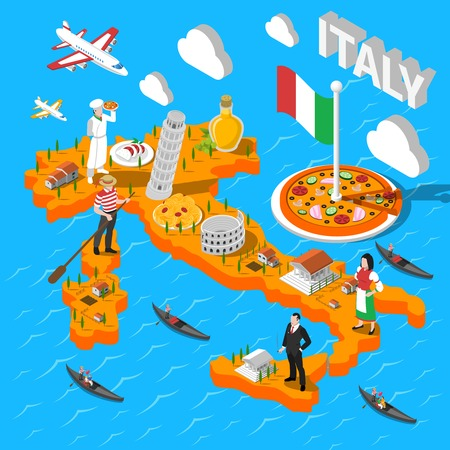

¡Exploremos su rica cultura!
Caracteristicas, ¿Qué visitar?, ¿Por qué son conocidas?
Italia es un país de los más visitados en el mundo, según cifras sobre número de visitantes del mismo país, Italia recibe aproximadamente más de 40 millones de visitantes cada año, y es hogar de más sitios declarados Patrimonio de la Humanidad por la Unesco que cualquier otro país gracias a que es rico en ruinas antiguas, maravillosos museos, encantadoras playas y paisajes inigualables.
Y es que Italia tiene mucho que ofrecer, ya que es hogar de impresionantes ciudades como Roma, Florencia y un sinfín de sitios que te hace que ames tanto aquel país. ¡Conozcamos más sobre ellas!
ROMA
Todos los caminos conducen a Roma
Capital de Italia, es considerada una de las ciudades más bellas del mundo. Roma, el municipio más poblado y grande de Italia, figura entre las principales capitales europeas por la extensión de su territorio. Es la ciudad con mayor concentración de patrimonio histórico y arquitectónico del mundo; su centro histórico, delimitado por el perímetro de las Murallas Aurelianas, que superponen testimonios de casi tres milenios, es expresión del patrimonio histórico, artístico y cultural del mundo europeo occidental y, en 1980, junto con los bienes extraterritoriales de la Santa Sede en la ciudad y la Basílica de San Pablo Extramuros, fue incluida en la Lista del Patrimonio Mundial de la UNESCO.
Según la tradición, Roma se construyó sobre siete colinas, cuya identificación se pierde en la historia de los orígenes de la ciudad, lo que todavía deja dudas entre los historiadores. El núcleo central y antiguo de la ciudad está formado por las siete colinas históricas: Palatino, Aventino, Capitolino, Quirinal, Viminal, Esquilino y Caeliano.
En el centro histórico de Roma se encuentra el Panteón, un templo dedicado a los dioses del Olimpo, construido por el emperador Adriano (118-1128) y llamado por los romanos "la Rotonda". También son interesantes las columnas monumentales: la Columna de Marco Aurelio, erigida entre 176 y 192 para rendir homenaje a las victorias sobre los pueblos germánicos. También hay muchas plazas, lugares inolvidables en Roma: el Campo dei Fiori, con la estatua del filósofo herético Giordano Bruno en su centro; la plaza Navona, con la espléndida Fuente de los Cuatro Ríos de Bernini; la plaza de España, dominada por la famosa escalinata; la plaza del Popolo, con sus características iglesias gemelas; la plaza Venecia, con el imponente Vittoriano, detrás del cual se encuentra el Campidoglio; el Largo di Torre Argententina, con los restos de antiguos templos romanos; la plaza Trilussa y la plaza Santa Maria in Trastevere, ambas situadas en el histórico barrio de Trastevere.
Curiosidades
- Roma es la capital de dos estados
- Fue la ciudad más grande de Europa durante 500 años
- Tiene más fuentes que cualquier otra ciudad del mundo
- El Panteón, el único edificio antiguo intacto
- Una luz divina en el Panteón celebra la fundación de Roma
- Los gatos disfrutan de derechos especiales
- La Fontana di Trevi es una máquina de hacer dinero
- Ciudad del primer McDonald's de Italia
- Los romanos prefieren el escúter al coche
- Tiene cúpulas de todos los tamaños, pero solo una cuadrada
- Las escaleras de la plaza de España no tienen nada de españolas
MILANO
La capital europea de la moda
La capital de Lombardía es una ciudad culta, moderna y animada, con una gran riqueza de belleza y arte. El Duomo, con su luminosa fachada de mármol de Candoglia y su arquitectura gótica tardía, es el monumento simbólico de esta metrópoli del norte de Italia. Desde su cima, deteniéndose al pie de la Desde su cima, se puede disfrutar de una vista única de toda la ciudad, dominada por los 135 pináculos de la iglesia que apuntan hacia el cielo. En el corazón de la ciudad se encuentra el Palazzo Reale, antigua sede del Consejo Municipal de Milán, y hoy en día se celebran en sus históricas salas numerosas e importantes exposiciones de arte. El edificio está flanqueado por el ultramoderno Museo del Novecento, que alberga obras del siglo XX. Cerca de allí se encuentra otro símbolo de la ciudad La Galleria Vittorio Emanuele II, un pasaje peatonal cubierto en forma de cruz que alberga en su interior restaurantes históricos, bares y tiendas de moda. Famoso por sus suelos de mosaico y las vidrieras que forman su techo.
Para los amantes de la música, la parada obligatoria es en la Piazza della Scala, con el Teatro della Scala, considerado uno de los más importantes del mundo. Sin embargo, la tradición teatral de Milán también se encuentra en otros teatros repartidos por esta magnífica ciudad, desde el Teatro del Piccolo, fundado en 1947, hasta el Teatro d'Europa y el Teatro degli Arcimboldi, considerado la cuna del Cabaret. El Castello Sforzesco, construido a mediados del siglo XIV con fines defensivos y convertido ahora en una galería de arte con obras únicas como la Piedad Rondanini de Miguel Ángel, es un tesoro de historia y tesoros artísticos. Desde los patios del Castillo, puede pasear hasta el Parco Sempione, cuyas 47 hectáreas, dispuestas como un jardín inglés, albergan monumentos y edificios históricos, como el Arco de la Paz (1807) -una imponente construcción neoclásica orientada hacia París, en honor a las victorias de Napoleón- y el Palazzo dell'Arte, que alberga la Triennale, con exposiciones de arte moderno y colecciones de diseño. Y Milán es universalmente conocida como la capital italiana del diseño, además de la moda. Por eso se celebran aquí numerosas ferias, exposiciones y eventos a lo largo del año. Y no olvidemos que la ciudad acogerá la Exposición Universal en 2015.
Curiosidades
- Fue la primera capital de Italia
- Ciudad natal del Fiat
- Es la Capital Gastronómica de Italia
- Cuna del mejor chocolate del mundo
- Tienen una feria dedicada al chocolate
- Es uno de los principales motores económicos de Italia.
- Auténtico origen del vermouth negro.
- La Piazza Castello es el meeting point por excelencia
- Las mejores vistas de Turín están sobre el Museo del Cine
- Sede de la famosa y polémica Sábana Santa(Sudario de Turin)
- Aquí nacieron los palitos de pan, los Grissini.
TORINO
Uno de los principales motores económicos de Italia
La capital piamontesa sigue una estructura arquitectónica basada en grandes calles, avenidas y pórticos que se abren a plazas amplias y armoniosas que llevan la marca de una ciudad, la única de Italia, con un aire puramente aristocrático. La ciudad, verdadero punto de apoyo del Resurgimiento italiano y laboratorio de la unificación de la península, fue la capital del Reino de Italia entre 1861 y 1864. En esta época comenzó el gran desarrollo industrial que llevó a Turín a ser la primera gran ciudad industrializada de Italia, dando lugar al nacimiento de grandes polos industriales que provocaron una fuerte inmigración desde otras partes de la península. También por esta razón, Turín siempre ha estado abierta a las influencias de diferentes influencias de diferentes tradiciones italianas que han alimentado su vida artística y cultural. Una de las grandes industrias fundadas en Turín fue FIAT, Fabbrica Italiana Automobili Torino, en 1899.
Gracias a la herencia del patrimonio de la Casa Real, Torino conserva tesoros de gran valor: armas, joyas, tapices y objetos decorativos. En la Biblioteca Real, por ejemplo, se conserva el autorretrato en sanguina de Leonardo da Vinci, uno de los dibujos más famosos del mundo. El famoso "Collegio dei Nobili" es la sede del Museo de las Antigüedades Egipcias con una colección de más de 5000 piezas, sólo superada por la de El Cairo. No hay que dejar de visitar tampoco la Galería de Arte Moderno y el Castillo de Rívoli. Dentro del monumento emblema de Turín, la Mole Antonelliana, encontramos el Museo del Cine, la futurista instalación que simboliza el encuentro perfecto entre tradición y progreso.
Torino es además conocida como la ciudad del cine y de los cines. La metrópoli que ha visto nacer las imágenes en movimiento; la primera de todas en 1914, "Cabiria" di Pastrone con textos de D’Annunzio, es hoy una de las ciudades italianas con el mayor número de salas cinematográficas respecto al número de habitantes. También el panorama teatral turinés satisface todos los ustos. Bajo la Mole proliferan espacios, producciones y compañías en torno a un coloso, el teatro Stabile, al lado del célebre Teatro Regio, dedicado a la ópera, música y danza.
Curiosidades
- Fue la primera capital de Italia
- Ciudad natal del Fiat
- Es la Capital Gastronómica de Italia
- Cuna del mejor chocolate del mundo
- Tienen una feria dedicada al chocolate
- Es uno de los principales motores económicos de Italia.
- Auténtico origen del vermouth negro.
- La Piazza Castello es el meeting point por excelencia
- Las mejores vistas de Turín están sobre el Museo del Cine
- Sede de la famosa y polémica Sábana Santa(Sudario de Turin)
- Aquí nacieron los palitos de pan, los Grissini.